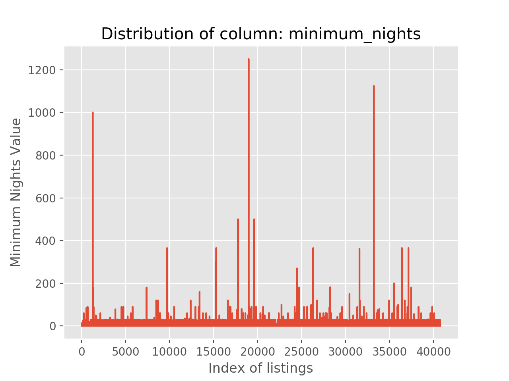
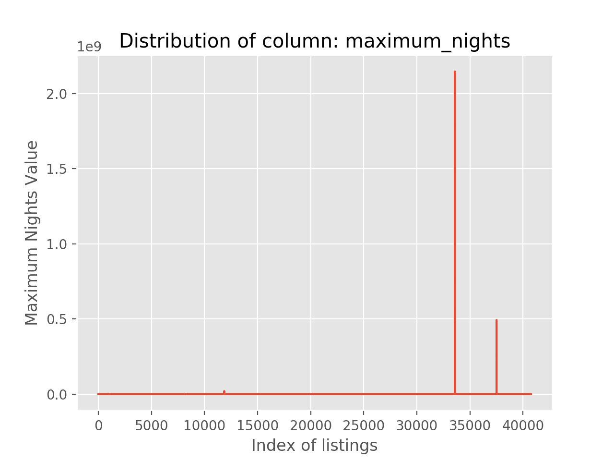
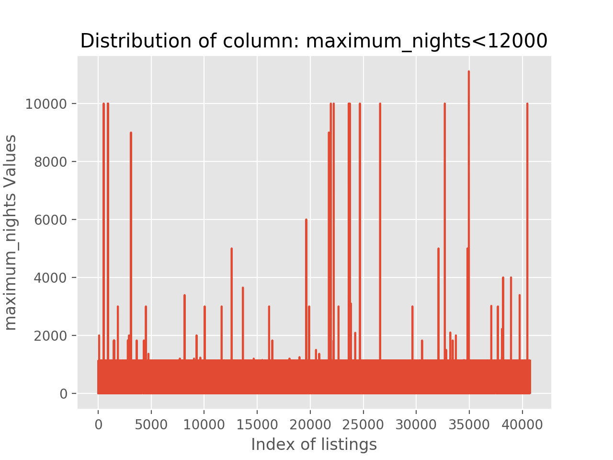
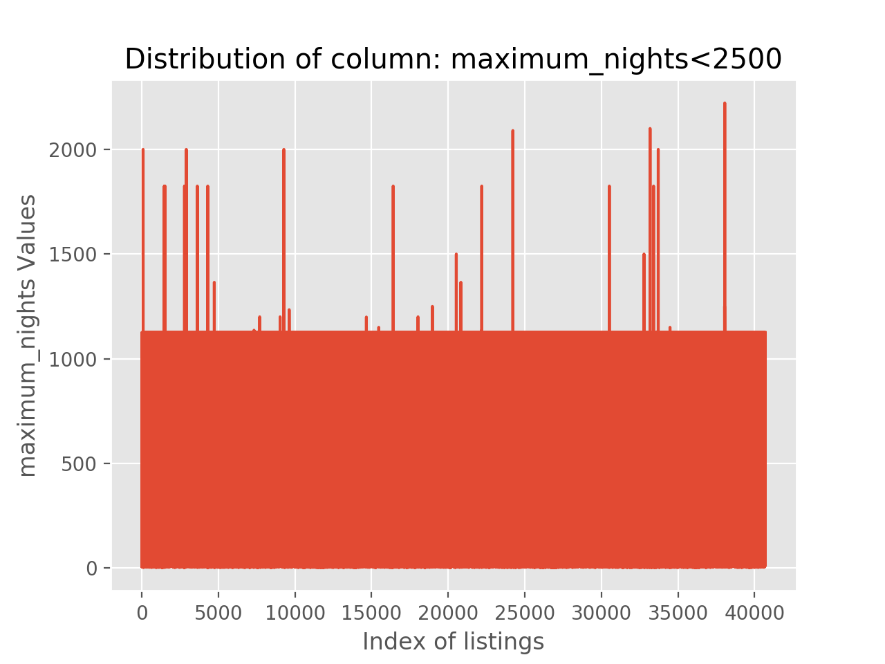

NOTE: Click on the tabs below to be able to view the graph.

INFERENCES/MEASURES
The number of data points are equal to the total number of listings. No data is missing.
Clearly, some outliers can be seen. It is not believable that a minimum_nights stay value could be so huge.
If it was, very few will opt for such a rental. It would be more of a leased apartment rather than a short term rental. Clearly, the business desired is short-term rentals and not very long ones.
To tackle the situation, median values have been taken into consideration while performing revenue analysis.

INFERENCES/MEASURES
The number of data points are equal to the total number of listings. No data is missing.
Two values are so high (in the range of billions) that they have suppressed the view of all the other normal values
Such high values have obviously been ignored and kept out of the analysis
View the tab to see a filtered chart of the same field.


INFERENCES/MEASURES
The number of data points is alomost equal to the total number of listings. Even though a lot of points have been filtered, it can be seen that the count of those outliers is quite less. The presence of the filtered out values make the view completely skewed or biased.
Clearly, even after filtering, few outliers can be seen. It is not believable that a maximum_nights stay value could be so huge. It can be attributed to human error or the houses with such values do not participate in a short term model but are proponents of a longer term rentals based market.
To tackle the situation, median values have been taken into consideration while performing revenue analysis. Also, approprite filters have been used to make use of sane data only towards generating the visualizations.